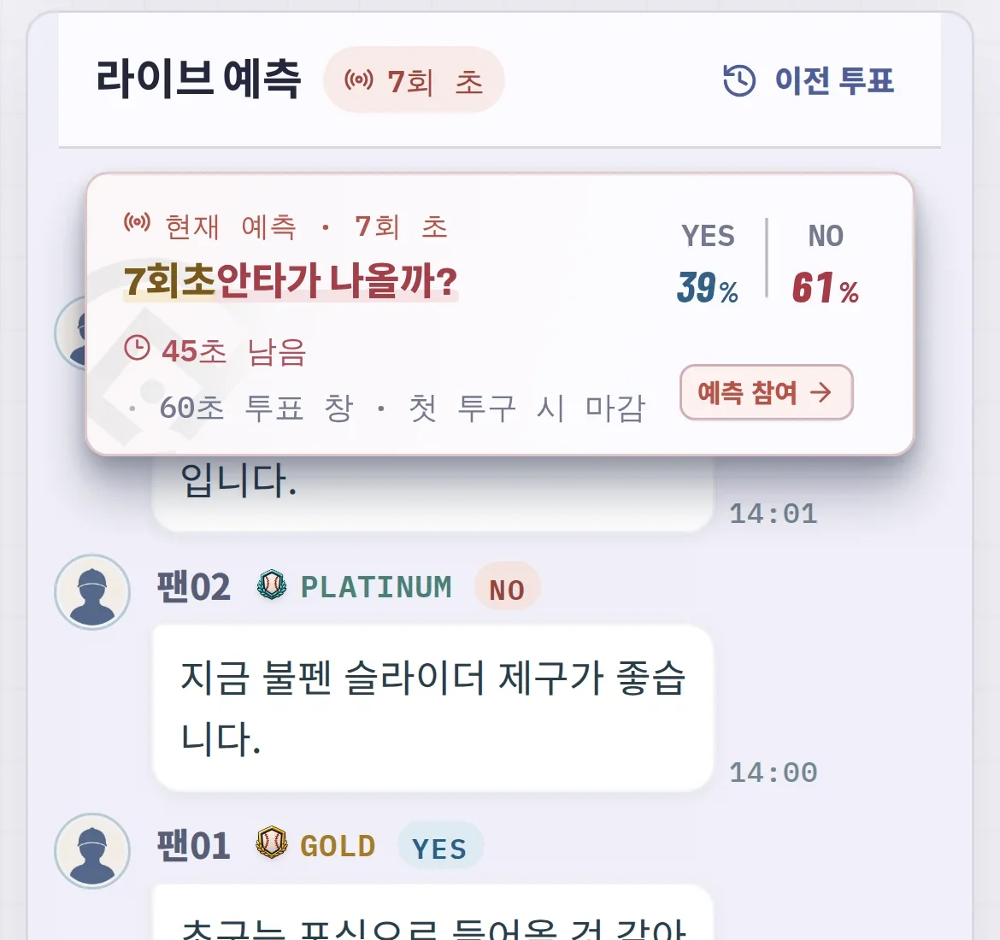
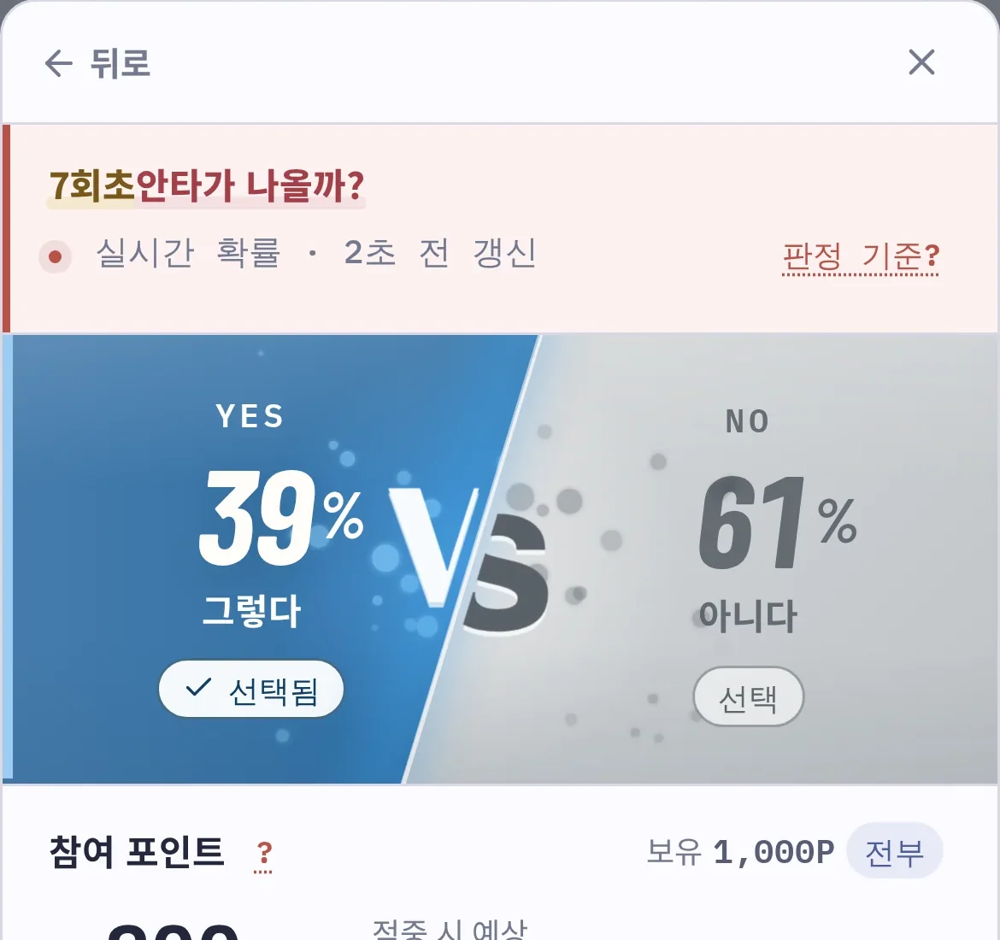
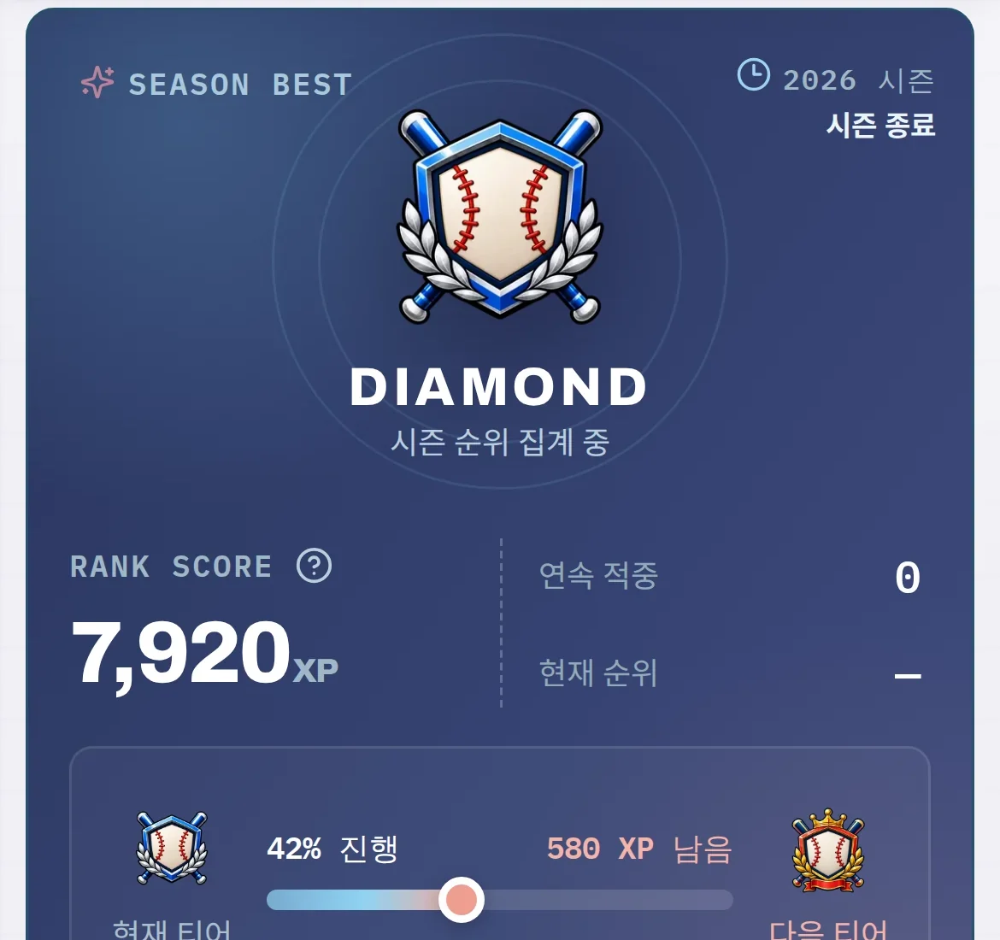

Background
기획 배경
기획 배경 문구 OO 작성
At a Glance
하프이닝 하나에서
일어나는 세 가지 일

01 질문이 자동으로 열립니다 공수 교대가 시작되면 서버가 과거 43,202개 하프이닝에서 집계한 확률표를 보고, 상황 특이도 · 흥미도 · 균형 세 가지 점수로 지금 낼 질문 하나를 고릅니다. 질문 38종 보기
02 60초 동안 참여합니다 무료 가상 포인트로 YES 또는 NO에 참여합니다. 투표 창은 60초이고 첫 투구가 들어오면 먼저 닫힙니다. 배당은 같은 질문에 모인 참여량으로 정해지는 파리뮤추얼 방식입니다. 정산 방식 보기
03 판정하고, 시즌에 쌓입니다 하프이닝이 끝나면 MLB 경기 데이터로 결과를 판정하고 포인트를 정산합니다. 쌓인 기록은 시즌 경험치 · 티어 · 랭킹으로 이어집니다. 시즌과 티어 보기화면의 참여 규모 · 계정 정보는 예시이며, 닉네임은 익명 처리했습니다.
Screen Recordings
실제 화면으로 보는 BetterBatter
0:00 / 0:00
서버 종료 뒤에도 볼 수 있도록 실제 앱을 2026-09-30 경기에서 수집한 데이터로 재생해 녹화했습니다.
경기 · 질문 · 기저확률은 실제 값이고, 참여 규모와 계정 정보는 예시입니다.
다음
하프이닝마다 열리는 질문과 참여 흐름